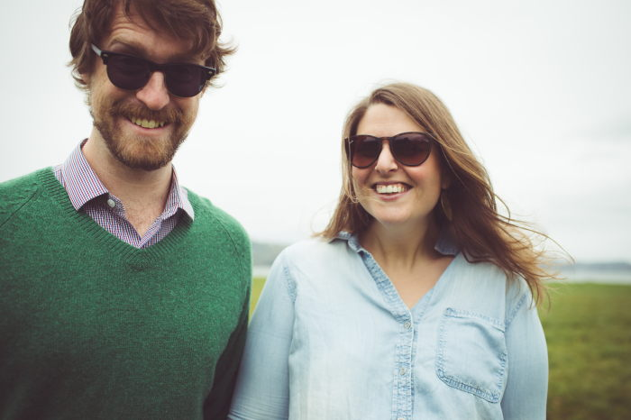
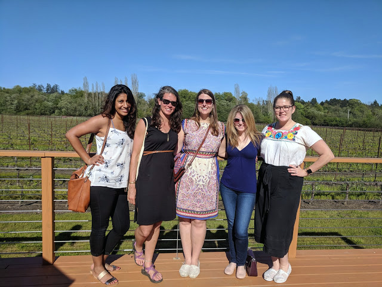

Meet the Wedding Party!
Ashley and Zach: the couple

Ashley: Lover of life, cheese, and making nests out of blankets (in that order)
Zach: Lover of meat, beer, and beer and meat (in that order)
Best Ladies/ Bride’s Life Partners/ Marital Squires

- Kathryn Babin McDermott (Babin): College roommate, first husband. Usually on a canoe in an exotic foreign land called “Canada.” Human of honor.
- Kate Brinkley-Talley (Brinkley): Friend from elementary school on up. Wears birkenstocks and bright red lipstick. Is totally over that time Ashley beat her in the 3rd grade spelling bee. Once walked an apple on a leash, which is not a joke or metaphor or anything. She really did that.
- Dr. Christine Neeb (Neebs): College friend and dormmate. Huge Icelandaphile. Speaks German fluently enough to declare her love of Torte. Despite the fact that she dislikes cheese, has remained friends with Ashley after all of these years.
- Prithi Trivedi (Prithi): Friend from grad school. Lover of french pastries and good cheeses. Avid enthusiast. Has traveled to three continents with Ashley (more if you count all the countries they saw during “It’s a Small World,”), and is also the only best lady who is called by her actual first name.
Groomsmen:
- Justin Farwell: Linguist and quintessential Californian. Can articulate the morphology of the word bro. Zach and Justin met on the first day of New Grad Student Orientation, and thus is Zach’s oldest Berkeley friend. Consummate connoisseur of axes and flannel. Founding member of Viggo Mortensen Fan Club. Always up for a night of shenanigans if beer is involved. Contemplator of potential zombie apocalypses. Justin and Zach toured Russia for Spring Break, enchanting the local people and drinking all the Три Медведя the country had to offer and managed to avoid apprehension by the authorities. He has also been known to occasionally mention his love of Nirvana. Or was that Sound Garden?
- Eric Savoth: Eric often exposes his New Jersey roots by his constant loud and aggressive behavior. Eric and Zach met in the German Literature PhD program at Berkeley. Eric and Zach have shared many years taking classes, teaching and researching in the glorious halls of Dwinelle. Zach and Eric like to get some beers and spend an evening debating various academic and/or political topics.
- Trevor Sanders: A Francophile with Appalachian flair. Zach and Trevor met when Trevor became the newest housemate on Jefferson Avenue. Zach’s long, unkempt hair at the time initially made Trevor think that he had found a political ally, but that was soon discovered to be a ruse. However, Trevor and Zach had, and continue to have, friendly political discussions over beers, be it in Berkeley or over a camp fire. Despite hailing from the French Literature Department, Trevor has taken several classes along with Zach – German Idealism is their common academic link. Trevor also was Zach's student one semester for a German Grammar class. Genosse Frosch, you handled the course with aplomb!
- Matthew Jayjack and Daniel Dziedziak: Zach’s older brothers. He feels like he has known them his entire life. It’s safe to say that their reputations precede them.